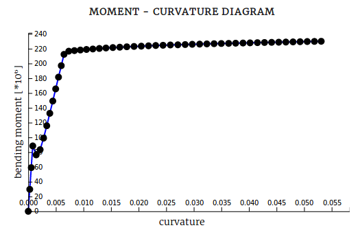
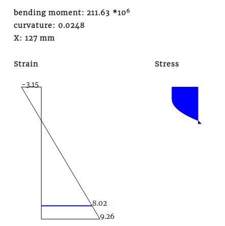
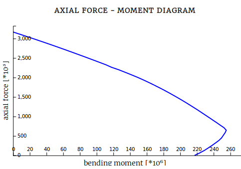

4. Results¶
Under the results tab the available results will be shown. Results are a:
- moment curvature interaction diagram
- axial force - moment interaction diagram
- strain results in a section at a queried bending moment
- stress results in a section at a queried bending moment
4.1. Moment curvature interaction diagram¶
After running a calculation the moment curvature diagram will show. Only positive moments and positive bending moments are shown. If you are interested in the results in the other direction, you could rotate the cross section 90 degrees.
M-N-Kappa.
4.2. Section diagrams¶
As can be seen in the M-N-Kappa diagram above, the interaction line shows many dots. By clicking on of these dots you will get visual feedback of the section strains and stresses acting on that point in the diagram.
Section results.
The section results screen will show the strain distribution acting on the entire section and the stress distribution of the cross sections material. Note that stress results of the reinforcement is not shown.
The screen also shows the currently acting bending moment, curvature and the height of the cross section, named as X.
4.3. Axial force¶
Before computing the results, the axial force acting on the cross section can be set. A negative value will result in a acting compressive force. A positive inserted value will result in a tensile force acting on the cross section.
4.4. Axial force - moment interation diagram¶
When the N-M-Diagram option is checked an axial force - moment interaction diagram will be shown. This diagram shows the influence of a varying axial force on the bending moment capacity.
Example of an axial moment diagram.